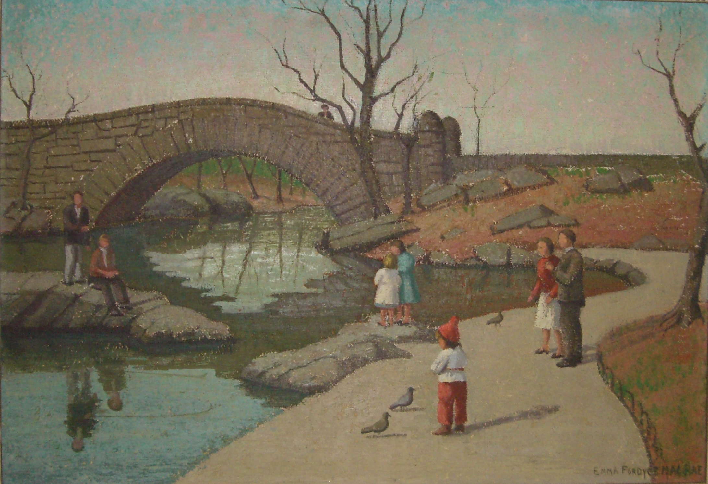

Central Park Bridge

MacRae was given a licence to set up her easel on the grass in Central Park in New York at a time when it was forbidden to walk on the grass and she painted several scenes of the park including Central Park Bridge which she started to paint in 1946. She walked across Central Park to her studio at 12 West 69th Street.
Exhibited: 1949 – National Academy; 1950 – Pen and Brush Club - first prize; 1950 – National Arts Club Non Members; 1953 – Knickerbocker Artists; 1955 – American Artists Professional League; 1959 – Allied Artists of America; 1968 – Pen and Brush; 1969 – Brearley School.
Download to print (PDF Document)

|
Central Park Bridge |
|
Oil on board |
|
18 x 26 inches |
Landscape |
Emma Fordyce MacRae |